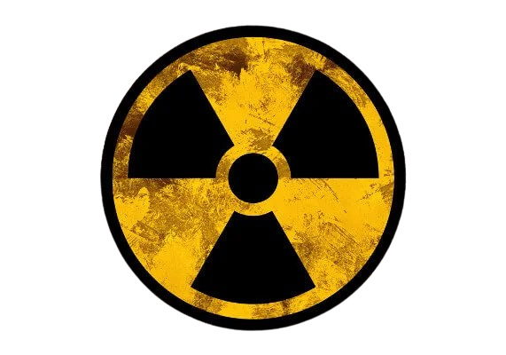
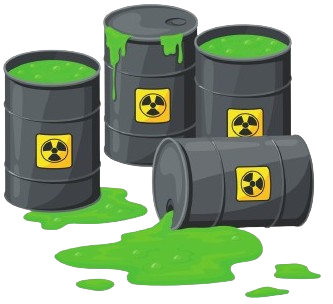

Sua História
ㅤㅤA gestão de resíduos radioativos é um tema crítico que surgiu com o desenvolvimento da energia nuclear no século XX. O uso de materiais radioativos se intensificou após a descoberta da fissão nuclear, que possibilitou a geração de energia em larga escala. Desde então, a necessidade de lidar com os subprodutos gerados por reatores nucleares e outras aplicações médicas e industriais tornou-se uma prioridade. Com a crescente preocupação sobre a segurança e os impactos ambientais, surgiram regulamentações e práticas que visam proteger a saúde pública e o meio ambiente.
ㅤㅤOs primeiros indícios do uso de materiais radioativos datam do final do século XIX, com os trabalhos de cientistas como Henri Becquerel e Marie Curie. No entanto, foi apenas na década de 1940, durante a Segunda Guerra Mundial e o desenvolvimento da bomba atômica, que a questão dos resíduos radioativos ganhou destaque. Desde então, diversas nações começaram a desenvolver estratégias para o gerenciamento adequado desses resíduos, considerando sua periculosidade e a necessidade de monitoramento a longo prazo.
ㅤㅤHoje, a gestão de resíduos radioativos é um campo interdisciplinar que envolve ciência, engenharia, políticas públicas e considerações éticas. As soluções adotadas variam de acordo com o tipo de resíduo, sua radioatividade e o contexto em que foram gerados. O objetivo final é garantir que esses materiais sejam isolados de maneira segura, evitando contaminação e riscos à saúde das gerações futuras.
Composição
ㅤㅤOs resíduos radioativos são classificados com base em sua composição e nível de radioatividade. Eles podem conter uma variedade de isótopos radioativos, como urânio, plutônio e césio, que resultam de processos nucleares, reações em reatores ou utilização médica. Esses resíduos podem ser divididos em três categorias principais: resíduos de alta atividade, média atividade e baixa atividade.
ㅤㅤOs resíduos de alta atividade, como os gerados em reatores nucleares, são extremamente radioativos e requerem contenção em locais especialmente projetados por milhares de anos, devido ao longo tempo de meia-vida de alguns isótopos. O manejo desses resíduos é complexo, exigindo infraestrutura robusta e tecnologias avançadas de monitoramento.
ㅤㅤOs resíduos de média atividade, por outro lado, são menos radioativos, mas ainda apresentam riscos significativos. Eles podem incluir materiais usados em tratamentos médicos ou pesquisas. O manejo desses resíduos é um desafio, pois também requer precauções rigorosas, embora as soluções de armazenamento possam ser menos complexas em comparação com os resíduos de alta atividade.
ㅤㅤOs resíduos de baixa atividade, frequentemente provenientes de aplicações médicas e industriais, são considerados menos perigosos. No entanto, ainda assim precisam ser geridos de maneira adequada para evitar contaminação. Geralmente, esses resíduos podem ser tratados e descartados em aterros específicos que atendem a normas de segurança, mas é fundamental garantir que a contaminação não ocorra.
Tipos de Resíduos Radioativos
| Tipo | Características |
|---|---|
| Resíduos de Alta Atividade | Extremamente radioativos, requerem contenção por longos períodos, muitas vezes milhares de anos. |
| Resíduos de Média Atividade | Menos radioativos que os de alta atividade, mas ainda perigosos, requerem gestão rigorosa e monitoramento. |
| Resíduos de Baixa Atividade | Considerados menos perigosos, geralmente gerados por aplicações médicas e industriais, requerem descarte seguro. |
| Resíduos Gasosos | Emissões radioativas resultantes de processos nucleares, exigem controle específico para evitar dispersão. |
| Resíduos Líquidos | Provêm de processos industriais e devem ser tratados antes do descarte para garantir a segurança. |
Métodos de Disposição de Resíduos Radioativos
| Método | Descrição | Aplicações |
|---|---|---|
| Armazenamento em Superfície | Armazenamento temporário em contêineres seguros. | Resíduos de baixa e média atividade. |
| Armazenamento Profundo | Enterro em locais geológicos estáveis, a milhares de metros de profundidade. | Resíduos de alta atividade. |
| Desintegração Controlada | Processo de deixar o material radioativo decair ao longo do tempo em áreas seguras. | Resíduos com meias-vidas curtas. |
| Reprocessamento | Recuperação de materiais úteis a partir de resíduos nucleares. | Resíduos de alta atividade. |
| Tratamento Químico | Processo químico para estabilizar ou solidificar resíduos líquidos. | Resíduos líquidos. |
Impactos Ambientais dos Resíduos Radioativos
| Impacto | Descrição | Exemplo |
|---|---|---|
| Contaminação do Solo | Material radioativo pode infiltrar-se no solo e afetar a flora e fauna. | Acidente de Chernobyl. |
| Contaminação da Água | Resíduos podem vazar para aquíferos, contaminando fontes de água potável. | Descarte inadequado de resíduos líquidos. |
| Risco à Saúde Humana | Exposição a radiações pode causar doenças, incluindo câncer. | Trabalhadores em indústrias nucleares. |
| Impacto na Biodiversidade | Radiação pode afetar ecossistemas, levando à diminuição de espécies. | Regiões ao redor de usinas nucleares. |
Como Funciona a Gestão de Resíduos Radioativos
ㅤㅤA gestão de resíduos radioativos envolve um conjunto de práticas que garantem que esses materiais sejam manipulados, armazenados e descartados de maneira segura. O primeiro passo é a identificação e classificação dos resíduos gerados, o que permite entender a radioatividade e o risco associado a cada tipo de resíduo.
ㅤㅤApós a coleta, os resíduos são armazenados em recipientes apropriados, que devem ser resistentes à radiação e vazamentos. Esse armazenamento inicial é crucial, pois os resíduos podem ser altamente perigosos e, se não forem devidamente contidos, podem causar contaminação no meio ambiente.
ㅤㅤOs resíduos são então enviados para instalações de tratamento e disposição final. Nessas instalações, os resíduos são submetidos a processos que podem incluir a solidificação, estabilização e contenção. O objetivo é reduzir a radioatividade dos resíduos, sempre que possível, e prepará-los para um descarte seguro. Essas instalações são projetadas para isolar os resíduos do meio ambiente, garantindo que a radiação não escape e não cause riscos à saúde pública.
ㅤㅤAlém disso, é essencial que haja monitoramento constante das áreas de armazenamento e disposição, bem como o cumprimento de normas e regulamentações internacionais para a segurança nuclear. Essa vigilância é fundamental para prevenir incidentes e garantir a proteção das gerações futuras.